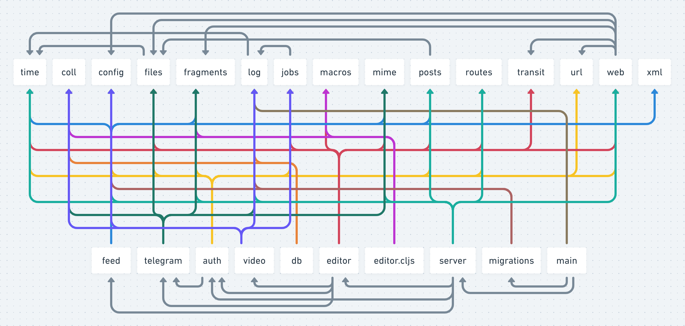

Status: WIP.
Hourglass architecture, flexibility, optionality and orthogonality are related!
How do other people describe hourglass architectures? What are threads to follow?

Source: https://tonsky.me/blog/utils/
Workflow design (collection of problems, flows) - Product design (collection of features, intended use, composition) - Capability design (what are we able to do, what is our oportunity space)
vague.
By building layered applications where each layer builds on a lower level, designed orthogonally, we gain power in each level.
“multilayer” hourglass architecture?
pandoc - intermediate format
perhaps this is just the “depend on interface” thing?
Ref Osterhout’s “Philosophy of Software Design”
“prefer creating a new deletable module to creating layers”
Application - teod.eu subdomains. “There are many - but they can be deleted”. Application - play.teod.eu pages - “They are many - but they can be deleted”.
Where is legibility?
You might not be able to read something purely from the hierarchy But you’ll know for sure that there aren’t architectural layers that don’t do anything
If the problem is messy, a clean “narrow waist” solution might not be possible.